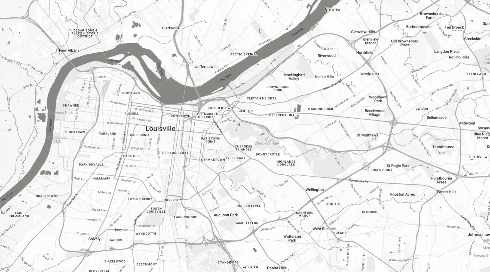

matt nitzken
machine learning engineer | data scientist
machine learning engineer | data scientist
I'm a machine learning engineer and data scientist with a background in electrical, computer, and bioengineering, and more than 15 years working in AI.
I'm currently a Principal Machine Learning Engineer at DataRobot, where I lead the engineering behind our LLM agents and agentic workflows and build generative AI products. It's been the near-total focus of my recent work, and the direction I want to keep building in. The rest of my career has been full-stack machine learning and data science in large-scale data environments, not just building models but turning new ideas into real, shipped products, and I gravitate toward hard problems that haven't been solved yet and getting them into production.
Along the way I've worked across generative AI, LLMs, and agents; time series and deep learning; healthcare; data engineering; medical diagnostics and research; image and signal processing; technical publishing; software development; and controls automation. I enjoy collaborating with, learning from, and mentoring the people around me.

You can find an automatically updated list of publications on Google Scholar.
For most of my publications you can download a free PDF of the published or draft version from Github Publications.